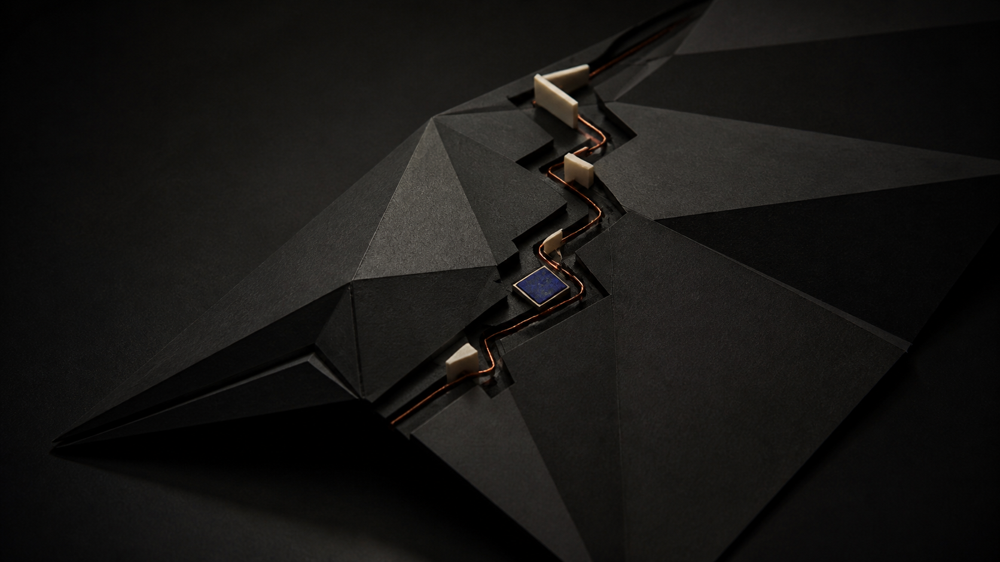

01 / Dialogue
Stay with the part that does not make sense yet.
Ask in ordinary language. Socrates follows your reasoning, offers a sharper question, and helps you find the assumptions hiding underneath an answer.
The learning loop
Socrates keeps the conversation moving until an idea is yours: question it, explain it, recall it, and connect it.
A practice, not a feed
Every exchange is designed to leave a trace you can revisit: the claim, the reason, the uncertainty, and the next question.

01 / Dialogue
Ask in ordinary language. Socrates follows your reasoning, offers a sharper question, and helps you find the assumptions hiding underneath an answer.
02 / Recall
Turn useful moments into small prompts for later. Revisiting an explanation in your own words makes the next conversation more precise.
03 / Knowledge map
Your questions form a growing map, so a concept in statistics can meet an old idea from philosophy or a note from yesterday’s reading.
04 / Practice
Use low-stakes questions and short explanations to discover what holds, what is missing, and where a better question should begin.
Built for continuity
Socrates is intentionally calm: a durable place for your thinking, rather than another stream asking for your attention.
See plans and access